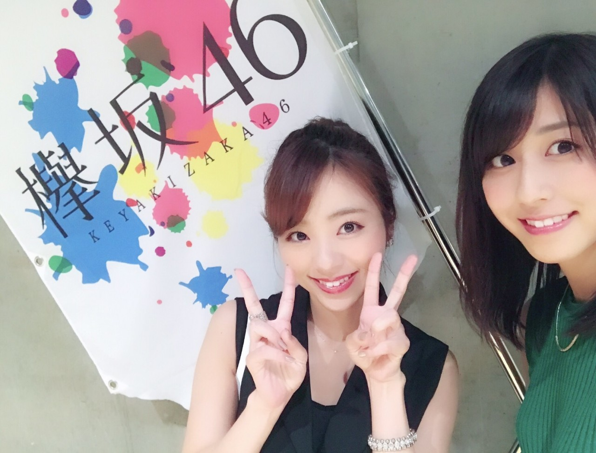
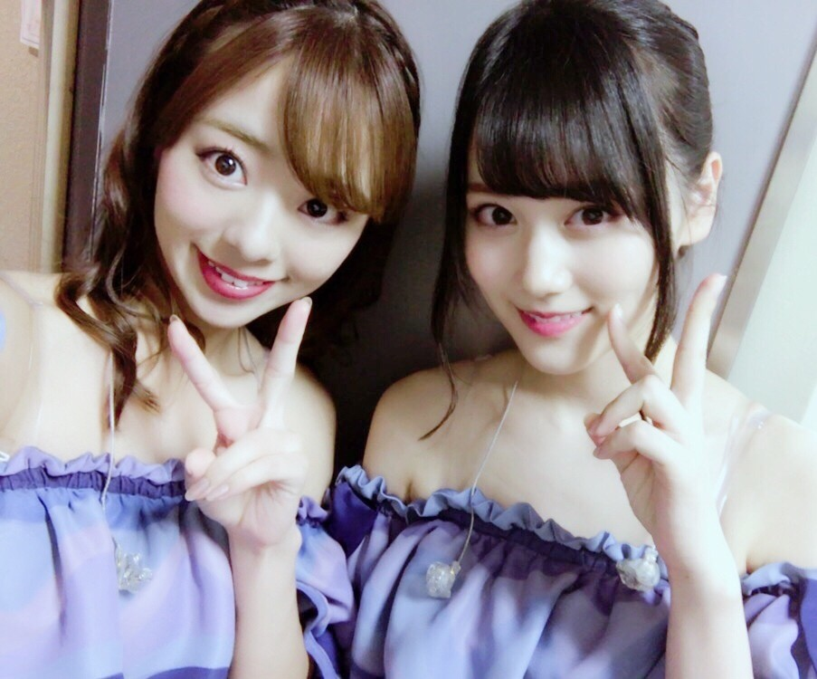
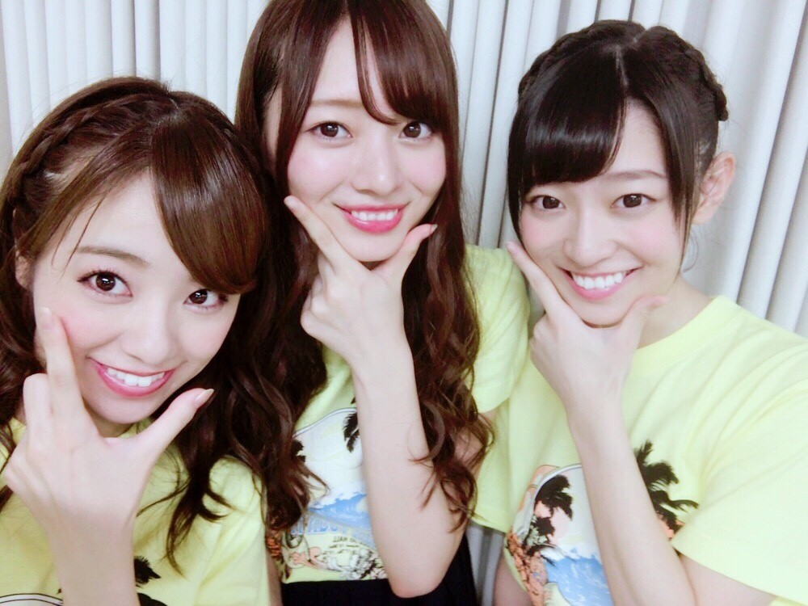
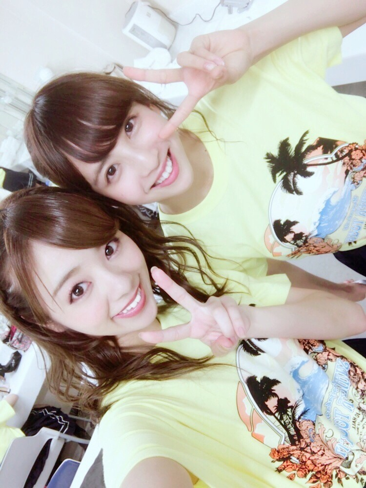

| 2017/09 01 Fri | ばびぶべぼぉ。 |
こんにちわ♡
ろってぃーですよー．

ごめんなさい，自撮りだから反転してますけど，欅坂46のLiveに行ってきました‼︎
行ってよかったです♡
それからは家で欅の曲流したりしてます．
歌もダンスも衣装もgood♡
演出の仕方にも驚いたなぁ...。
皆可愛い(*^_^*)
アンコール，真似して踊ってみたけど，途中リタイア♡♡

そしてそして，
今日から９月ですね。。
夕方になればもう肌寒い。。
今年も後4ヶ月、、
あっという間だけど、未来を早くみたい私は早く月日が経つ事は嫌ではない♪
どんな25歳、30歳、おばあちゃんになってるんだろう？？ってわくわく。
そーいや名古屋のLiveの時に軽くみづきと話して写真とりましたぁ。
かんわい♡

みづきの第1印象は，目力‼︎
可愛いとかは前提としてね，誰よりも目力が、、（╹◡╹）♡
後，面白い子なんだろうなー。。ってのは伝わってきます‼︎
若様軍団の1人なので これからきっと若月がみづきの良さを引き出してくれるはずです♡笑
美波とたまみ。

美波は真面目でお洒落が好きな綺麗な女の子って感じ♡ 後 名前の由来が好きやぁ。
たまみはここ半年程で凄く可愛いくなったって思う。 多分これからどんどん磨きがかかっていくんやろなぁ...♡と勝手に楽しみにしてます。
でーんでんむーしむしカータツムリーー。
でんちゃん♡

でんちゃんの顔好き．笑
大人っぽい顔からの，笑った時の無邪気な顔可愛いです(*^_^*)
それに笑顔でいつも楽しそうに踊ってる姿もいいとこ。
そやな～
ぁ...
何かお腹空いてきたよ？
お肉食べたいよ～(´・ω・｀)
とりあえず目の前にあるカフェラテを飲みますね？
じゃあね♡笑笑
締め方雑やね。てへ～
コメント(172)
2017/09/01 19:36